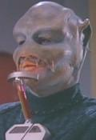

Mordock |
|
|||||
|  |
Benzita che ha elaborato la strategia che porta il suo
nome. Nel
2364 è uno dei finalisti selezionati per sostenere
l'esame di ammissione alla
Flotta Stellare su
Relva VII ed è il candidato che supera l'esame di
ammissione. Mordock è il primo
Benzita ad entrare nella
Flotta Stellare.